Eine kleine Chronologie der Schwießelmänner
Die kleine Chronologie der Schwießelmänner folgt einem sehr subjektiven Erkenntnisinteresse eines Individuums, das darum weiß, dass „Abkunft“, „Herkunft“ und „Zukunft“ nicht zufällig denselben Wortstamm haben. Wer nichts über seine Vorfahren wissen will, irrt blind durch Raum und Zeit. Bestenfalls ist er einer jener glücklichen, kindlichen Augenblicksmenschen, die von gestern und morgen nichts wissen wollen; schlimmstenfalls folgt er falschen Propheten, die ihn zum Objekt ihrer Interessen, Ideologien und Utopien machen. Ein durch die Herkunft geerdeter Mensch schaut zurück und sieht sicheres Terrain, selbst wenn er vor ihm liegende terrae incognitae durchschreitet.
Der Ort Schwiessel
Eine Recherche in den Telefonbüchern, sozialen Medien und sonstigen Datenpfützen des Internets ergibt, dass nur wenige Dutzend Menschen in Deutschland diesen Namen tragen. Auch in der großen genealogischen Datenbank Geneanet taucht der Name nur 68-mal auf. Im Telefonbuch hat sich die Anzahl der Schwießelmänner innerhalb von 20 Jahren von 18 auf sechs reduziert, was sehr wahrscheinlich dem Aussterben der Festnetztelefonie geschuldet ist. Unter den deutschen Familiennamen dürfte dieser mecklenburgische Ortsname damit Seltenheit haben. Tatsächlich liegt der Schluss nahe, dass Schwießelmänner Männer und Frauen aus Schwiessel sind.
Das kleine Dorf in der mecklenburgischen Schweiz liegt auf der halben Strecke zwischen den Kleinstädten Laage und Teterow nahe der B 108 und wurde erstmalig 1379 urkundlich erwähnt. Ein altes und ein neues Gutshaus weisen auf eine typisch ostelbische Grundherrschaft hin, die wechselnden Eigentümerfamilien bieten eine Tour d’Horizon durch den mecklenburgischen Landadel. Wikipedia (https://de.wikipedia.org/wiki/Herrenhaus_Schwiessel) belehrt uns, dass das Gut im 14. Jahrhundert zunächst den Negendancks gehörte, einem „im Mannesstamm erloschenen“ Geschlecht. „1561 veräußerte Joachim von Negendanck das Anwesen an Dietrich von Bevernest. Im Jahr 1667 fiel das Landgut erneut an die Familie Negendanck. 1732 verkaufte Berthold Diedrich von Negendanck Schwiessel an Hans Heinrich von Levetzow.“
Kammerherr von Bassewitz
Hans Heinrich von Levetzow heiratete nur eine Anne Dorothea von Plessen, worauf das Allianzwappen über dem Portal des von 1732 bis 1735 errichteten alten Gutshauses deutet. „Feldmarschall Johann Ludwig von Wallmoden-Gimborn wurde 1782 Gutsherr zu Schwiessel; im Jahr 1838 wurde der Mecklenburg-Schwerinsche Kammerherr Adolph Christian Ulrich von Bassewitz mit dem Gut belehnt. In den 1860er Jahren ließ Henning von Bassewitz auf dem Gut ein neues schlossartiges Herrenhaus im Tudorstil errichten; das alte Fachwerkgutshaus wurde von dieser Zeit an als Gutsverwalterhaus weitergenutzt“, schreiben die Internetenzyklopädisten.
Das Gut umfasste Ende der 1920er Jahre „842,20 Hektar, davon etwa 100 Hektar Wald“. Eigentümer waren Ernst-Henning Graf von Bassewitz (1858-1926) und dessen Neffe Georg-Henning von Bassewitz-Behr (1900-1949) auf Lützow. Letzterer schloss sich, weil die Güter schlecht liefen und alle Auswanderungspläne scheiterten, der nationalsozialistischen Bewegung an. Er trat 1930 in die NSDAP ein, war Ortsbauernführer in Schwiessel, beschmutzte sich im Krieg gegen die Sowjetunion als „SS-Gruppenführer und Generalleutnant der Waffen-SS“ (https://de.wikipedia.org/wiki/Georg-Henning_Graf_von_Bassewitz-Behr) mit dem Blut von 40.000 Zivilisten, Partisanen und Juden und starb in einem sowjetischen Arbeitslager.
Falls die Schwießelmänner wirklich aus Schwiessel stammen, dann dürfte ihr Leben als Tagelöhner auf den Gütern ähnlich arbeitsreich gewesen sein, wie das von Bassewitz-Behr in Sibirien, freilich etwas glücklicher und wohl stets mit Speck und Grieben. Belege dafür finden sich jedoch nicht. Die Kirchenbücher mit ihren Tauf- und Kopulationsregistern reichen selten ins 14. und 15. Jahrhundert zurück, sodass zumindest für diese Jahrhunderte nur wenige verlässlichen Quellen vorliegen. Eine davon ist das mittlerweile digitalisierte Matrikel der Universität Rostock, das kurz nach der Gründung der Universität im Jahr 1419 einen Schwießelmann verzeichnet.
Akademische Weihen
Am 8.10.1426 schrieb sich „Nicolaus Switselman“ an der Universität ein, die als „Perle des Nordens“ in ihrer Gründungsphase in einem exzellenten Ruf stand - ganz ohne staatliche “Exzellenzoffensiven”. Damaliger Rektor war Nicolaus Theoderici. Die Gebühr betrug laut Matrikelportal: ½ „fl.“ Unter dem Immatrikulationsjahrgang findet sich die lateinische Bemerkung „Isti et sequentes iuvarerunt particulam non ascriptam“, die auf eine unvollständige Eidleistung oder Einschreibung hindeutet.
Besagter Nicolaus - diesmal in der Schreibung „Swicelman“ promovierte im Wintersemester 1428/1429 zum „Bakkalar“ an der Philosophischen Fakultät. Letztere dürfte eine spätere Kategorisierung abbilden, da die Gelehrten ihrer Zeit zunächst die Artistenfakultät mit ihren sieben freien Künsten (artes liberales) durchliefen: Grammatik, Dialekt, Rhetorik, Arithmetik, Geometrie und Astronomie. Erst nach diesem Propädeutikum begann das eigentliche Studium der Theologie, Medizin, Philosophie oder der Jurisprudenz. Im Falle des „Bakkalars Schwitselman“ verlieren sich allerdings die Spuren.
Die unterschiedliche Schreibweise des Namens im Studentenverzeichnis der Universität Rostock innerhalb von nur drei Jahren macht auf ein onomasiologisches Problem der Schwießelmänner aufmerksam: Ihre Schreibweise ist schon vor der Normierung der deutschen Sprache durch Konrad Duden höchst uneinheitlich. Gängig sind in den Archivalien, Registern, Taufscheinen und Konfirmationsurkunden die Schreibungen „Schwiselmann“, „Schwisselmann”, „Schwiesselmann” und „Schwießelmann”. Nicht wahrscheinlich, aber möglich ist es, dass es sei bei Nicolaus Switselman um gar keinen „Schwießelmann” handelt, sondern um einen Transskriptionsfehler aus dem Mittelniederdeutschen. Womöglich stammt Nicolaus gar nicht Mecklenburg, sondern aus der Schweiz. Wir wissen es nicht und werden es wohl auch nicht erfahren.
Nestbildungen
Im 17. Jahrhundert lässt sich der Name im Kopulationsregister der Güstrower Pfarrkirche mehrfach nachweisen. So heirateten dort am 9.4.1678 eine Ilsabe (vermutlich Isabel) Schwießelmans den Cherganten Paul Tietke. Vier Jahre später, am 6.9.1682, ehelichte ebenfalls dort Anna Margaretha Schwießelmans Andreas Haker. Und nochmals zehn Jahre darauf, am 8.9.1692, traute sich Catharina Elisabeth Schwießelmans mit Jacop Funck. Anna Margareta heiratete sogar am 15.8.1695 zum zweiten Male, diesmal: Daniel Ortner. Warum wissen wir nicht, anzunehmen ist das Ableben des ersten Mannes. Sehr wahrscheinlich stammen die drei Damen aus einem Güstrower Haushalt oder einem aus der ländlichen Umgebung. Möglicherweise waren es drei Schwestern. Auch in Parchim trat fast zu gleichen Zeit am 18.11.1672 eine Elisabeth Schwießelmans vor den Altar der Georgenkirche. Ob jene Elisabeth mit obiger Catatharina Elisabeth identisch war, bleibt im Dunkeln.
Für das 18. Jahrhundert lässt sich das „Nest” der Schwießelmänner in Boitin/Lübzin ausmachen. Die stärksten Hinweise darauf entstammen dem “Dorfsippenbuch Boitin und Lübzin”, das 1939 im Zusammenhang mit der sogenannten Blut- und Bodenforschung der rassebesessenen nationalen Sozialisten von Otto Micheel veröffentlicht wurde. Herausgeber war der Verein für bäuerliche Sippenkunde und bäuerliches Wappenwesen e. V., der dem Reichsnährstand der Reichsbauernstadt Goslar angegliedert war. Die Reihe hieß „Ahnen des deutschen Volkes”, es erschien - wen wundert es - im „Blut-und-Boden-Verlag". Als größere Stammreihen von Boitin und Lübzin werden hier auch die Schwießelmänner gelistet, die in beiden Gutsdörfern zwischen den Kleinstädten Warin und Bützow bis ins 18. Jahrhundert als Tagelöhner nachweisbar sind.
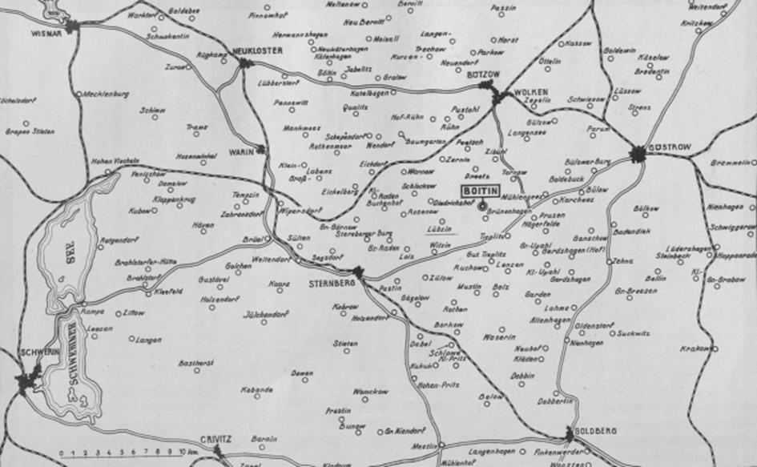
Quelle: Dorfsippenbuch (DSB), S. 13.
Boitiner Steintanz
Die Dörfer Boitin und Lübzin liegen in einem Nebental der Warnow in der hügeligen Endmoränenlandschaft, die typisch ist für das mittlere Mecklenburg. Seit 1765 ist der Ort bekannt für seine prähistorische Begräbnis- und Kultstätte, den Boitiner Steinkranz. Mehrere Ringe von Granitfindlingen von acht bis 14 Metern bilden - ähnlich wie in Stonehenge - einen Steinkalender, der auf die Wintersonnenwende geeicht ist. Die Waldeinsamkeit und die Löcher in dem größten Stein - die vermutlich von Spaltungs- und Bearbeitungsversuchen stammen - wirkten mythenbildend. Der Menhir (Hinkelstein) wird in der Volkssage als „Brautlade” verstanden. Als bei einer Bauernhochzeit durch die Verschwendung von Lebensmitteln gefrevelt wurde, so geht die Sage, verwandelte ein Geist in Gestalt eines alten Mannes die sündigen Bauern in Steine ebenso wie einen Schäfer und seine Herde (Boitiner Steintanz bei Wikipedia).
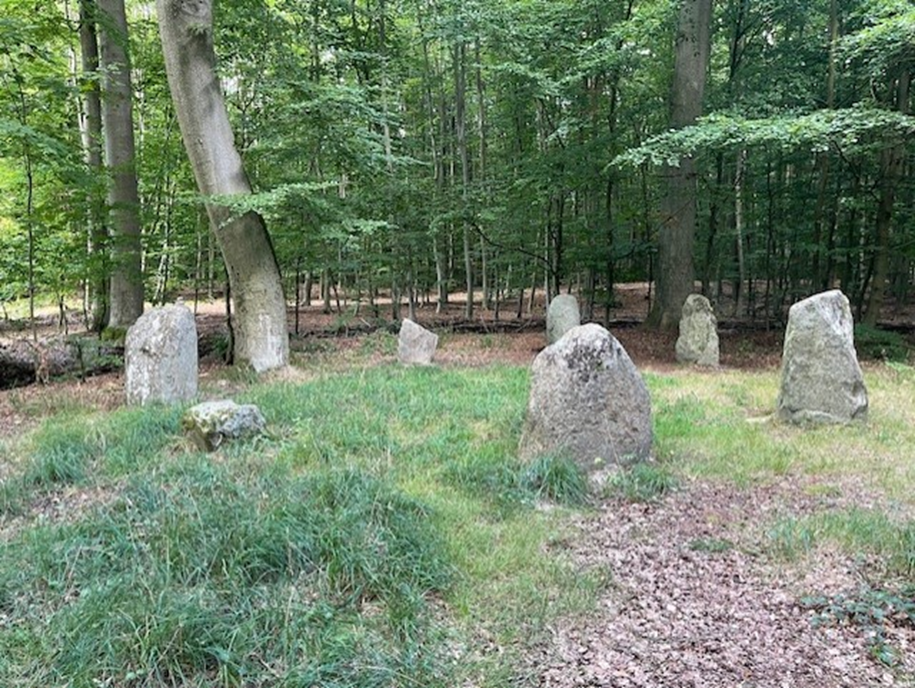
Quelle: Eigene Aufnahme.
Die Tagelöhnerdynastie
Das Dorf Boitin wurde erstmalig 1233 erwähnt (https://www.gemeinde-tarnow.de/html/body_boitin.html) und war ursprünglich ein Rundlingsdorf. Es erhielt 1252 eine Kirche und war eines von zwölf Stiftsdörfern des Stiftsamtes Bützow. Grundherr war ein Herr von Maltzan-Trechow. Die Bauern mussten ihm für seinen Schutz Geld und Naturalien abgeben sowie „Hand- und Spanndienste auf der vom Bischof selbst bewirtschafteten Schäferei leisten” (Dorfsippenbuch, S. 10). Die Reformation machte die Bauern frei von den bischöflichen Frondiensten. Lehensherr war nun der mecklenburgische Herzog Ulrich.
Ihren Grundbesitz vermehrten sie, indem sie den Boitiner See entwässerten. 1939 zählte das Dorf Boitin 257 Einwohner, eine staatliche Domäne, acht Büdnereien und 14 Häuslereien. Das benachbarte Lübzin taucht in den Urkunden erst 1261 auf und hatte 1563 nur einen Hof mit 1.000 Schafen. 1654 lebten dort immerhin schon zwölf Bauern. Zudem fanden sich in beiden Dörfern „ein bodenständiges Handwerkertum: Schmied, Schneider, Stellmacher, Fischer und Gastwirt” (DSB, S. 12). Lange wurde Flachs angebaut, gesponnen und gewoben.
Das Dorfsippenbuch Boitin/Lübzin berichtet ab Seite 256 über die Schwießelmänner als Tagelöhnerdynastie. Den ersten Eintrag bildet Johann Otto Schwießelmann, Einlieger in Lübzin.
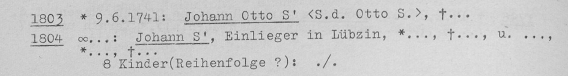
Quelle: DSB, S. 256
Urvater Otto
Besagter Johann Otto Schwießelmann hat einen 1720 geborenen Vater, Otto Schwießelmann, 7facher Urgroßvater des Verfassers dieser Chronologie. Er markiert die heutige Wissensgrenze, die sich bislang mit den KI-gestützten und milliardenfachen Datensätzen der Ahnenforschungsplattformen “ancestry” und “myheritage” nicht überwinden ließ.
Nach dem Dorfsippenbuch dürfte der Urahn Otto Schwießelmann neben Johann Otto Schwießelmann noch einen weiteren Sohn, Johann Joachim Schwießelmann gezeugt haben. Geburts- und Sterbedatum sind unbekannt. Wir wissen, dass der „Bäcker, Arbeitsmann und Einlieger in Lübzin” eine Maria Dorothea Stoffer (1732-1802) heiratete. Das 1774 geborene gemeinsame Kinder Leonore Juliane Schwießelmann wiederum heiratete den “Knecht und Arbeitsmann” Johann Joachim Friedrich Burmeister aus Grünenhagen und ließ sich mit ihr in Boitin nieder.
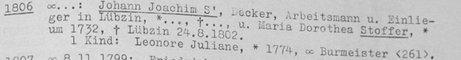
Quelle: DSB, S. 257.
Sein Bruder Johann Otto Schwießelmann, der 6fache Urgroßvater des Verfassers, geboren im Juni 1741, heiratete Eleonora Juliana Klatten. Ihre gemeinsamen Kinder sind nicht alle namentlich im Dorfsippenbuch verzeichnet. Zum Teil starben sie im Säuglings- oder Kleinkindalter:
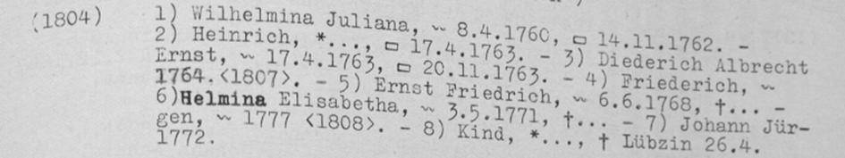
Quelle: DSB, S. 257.
Die Kinder- und Wochenbettsterblichkeit im 18. Jahrhundert war noch so hoch, dass die Tagelöhnerfamilien mit den gegenwärtigen Reproduktionsanstrengungen längst von der Bildfläche verschwunden wären. So verstarb die am 1760 geborene Tochter Wilhelmina Juliana im Alter von zwei Jahren, der 1763 geborene Sohn Diederich Albrecht Ernst im Alter von sieben Monaten. Gesichert ist, dass die beiden Brüder Johann Jürgen Schwießelmann (1777-1862) und Friedrich Schwießelmann (1764-1808) überlebten.
Johann Jürgen Schwießelmann verdingte sich als „Schaufelmacher und Tagelöhner”, heiratete Elisabeth Maria Burmeister (1796-1874) aus Warnow und übersiedelte später von Lübzin nach Boitin. Gemeinsam hatten sie sechs Kinder, von denen zwei nicht über das Kindesalter hinauskamen. Das Dorfsippenbuch dokumentiert lediglich den letztgeborenen. Die Nachkommen bilden den Zerniner Ast des Schwießelmannschen Stammbaumes.
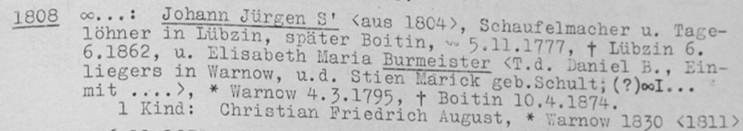
Quelle: DSB, S. 257
Der 5fache Urgroßvaters des Verfassers ist Friedrich Schwießelmann, der oben genannte Sohn von Johann Otto Schwießelmann. Der 1764 in Boitin geborene Tagelöhner verehelichte sich am 8. November 1799 sich mit Anna Maria Klatt (1775-1852) aus dem benachbarten Lübzin. Er starb 1808 mit 44 Jahren und hinterließ drei Kinder: Karoline Wilhelmina Elisabeth Schwießelmann (1800-1873); Johann Friedrich Schwießelmann (1803-1877) und Christian Friedrich Schwießelmann (1807-1808), der als Kleinkind starb.
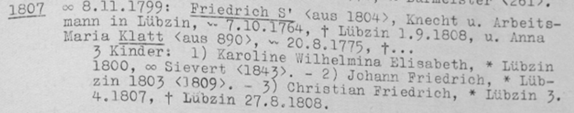
Quelle: DSB, S. 257
Die Tochter Karoline Wilhelmina Elisabeth Schwießelmann heiratete Johann Christian Sievert aus Zibühl (1796-1852) und hatte nach heutigem Stand der Forschung sechs Kinder. Die genealogischen Spuren der Schwießelmänner in der Sievert-Sippe sind in den entsprechenden Plattformen dokumentiert und müssen hier nicht weiterverfolgt werden. Sie führten auf den nordamerikanischen Kontinent. Ihr Bruder Johann Friedrich Schwießelmann (1803-1877) gerade war beim Tode des Vaters erst fünf Jahre alt. Er - der vierfache Urgroßvater des Verfassers - versprach am 6. November 1835 ebenfalls in der Boitiner Kirche Johanna Charlotte Eleonora Wieck im Alter von 32 Jahren die eheliche Treue. Vier Kinder sind im Dorfsippenbuch dokumentiert:
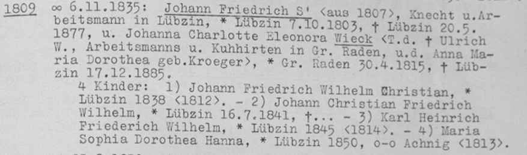
Quelle: DSB, S. 257
Spätestens ab dieser Generation verzweigt sich die Familiengeschichte ins Unüberschaubare. Das hängt auch damit zusammen, dass als Folge des medizinischen und hygienischen Fortschritts in Europa die Mortalität von Kindern und Müttern im Kindbett stärker zurückging als die Fertilität. Hier soll die räumliche Ausbreitung der Schwießelmänner im mittleren Mecklenburg exemplarisch nachgezeichnet werden. Vollständig lässt sich dies nur im Stammbaum zeigen, der im Verlauf der familiengeschichtlichen Forschung jedoch über das Maß der einfachen Darstellung hinausgewachsen ist und mittlerweile nahezu 800 Personen erfasst, ohne dass das 20. Jahrhundert überhaupt ausgeforscht wurde.
Zerniner Ast
Es scheint dem Verfasser deshalb angeraten zu sein, die Hauptäste darzustellen, die in die verschiedenen Himmelsrichtungen von Boitin und Lübzin gewachsen sind. Ein erster starker Ast wuchs nach Zernin. Er wurde begründet durch Johann Jürgen Schwießelmann (1777-1862), der oben bereits genannt wurde, mit seiner Frau Elisabeth Maria, geb. Burmeister (1796). Aus der Ehe gingen sechs Kinder hervor:
- Johann Joachim Christian Schwießelmann (1821-1866)
- Maria Sophia Dorothea Schwießelmann (1823)
- Magdalena Schwießelmann (1825-1829)
- Johann Joachim Christoph Schwießelmann (1827-1829)
- Sophie Dorothea Elisabeth Schwießelmann (1829-1898)
- Christian Friedrich August Schwießelmann (1830-1899)
Tarnower Ast
Der letztgeborene setzte zwei Söhne in die Welt: Johann Christoph Carl Friedrich Schwießelmann (1858) und Christian Wilhelm Theodor Schwießelmann (1859). Johann Christoph Carl Friedrich Schwießelmann heiratet Marie Luise Caroline Warnick (1866) begründet den Tarnower Zweig der Familie mit seinen fünf Kindern:
- Otto Carl Friedrich Schwießelmann (1888)
- Carl Heinrich Christian Martin Schwießelmann (1894)
- Erna Friederike Marie Sophie Schwießelmann (1895-1897)
- Anna Caroline Erna Frieda Schwießelmann (1899-1900)
- Hans Carl Ernst Schwießelmann (1902-1902)
Stimmen die Recherchen des Verfassers, dann ist dem Tarnower Zweig die Mühle in Tarnow zuzuordnen, die heute einen Antiquitätenhandel beherbergt.
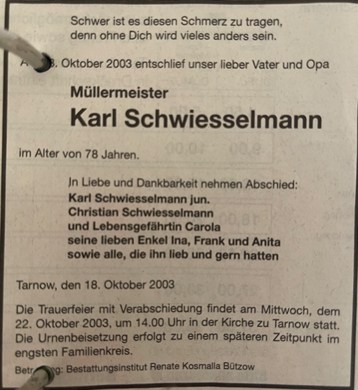
Groß Raden
Der Ast der Schwießelmänner in Groß Raden entsteht zwei Generationen später durch die Verehelichung von Johann Friedrich Wilhelm Christian Schwießelmann (1838-1894) mit Sophia Wilhelmine Maria Kröger (1840-1901).
- Marie Carolina Elisabeth Schwießelmann (1865),
- Carl Johann Christian Schwießelmann (1867-1870),
- Friedrich Heinrich Wilhelm Schwießelmann (1870),
- Sophia Caroline Johanna Schwießelmann (1873),
- Wilhelm Friedrich Theodor Schwießelmann (1876-1886),
- Johann Theodor Friedrich Schwießelmann (1879) und
- Heinrich Christian Ludwig Schwießelmann (1884).
Weil Sophie Kröger Tochter des Knechts Heinrich Friedrich Kröger (1807-1876) aus Groß Raden war, übersiedelte die kinderreiche Familie nach Groß Raden. Aus der Groß Radener Sippe erwuchs ein starker Ast. Allen voran Friedrich Heinrich Wilhelm Schwießelmann könnte aus „Überzeugung“ gestorben sein, wie der verstorbene Komiker Fips Asmussen zu sagen pflegte. Er heiratete Dorothea Karoline Henrike Schwager (1871) in Groß Raden, wo er selbst geboren war. Bevor er als Arbeitsmann in die Stadt Sternberg gegangen ist, verdingte er sich als Knecht in Rosenow, wo auch der Vater als Tagelöhner tätig war. Die Ehe am 1. November 1895 kam wohl auch zustande, um den am 23. April 1893 in Loitz geborenen Sohn zu legitimieren. Dorothea Karoline Henrike Schwager schenkte ihm acht Kinder:
- Friedrich Schwießelmann (1894)
- Otto Christian Carl Schwießelmann (1896)
- Ernst Wilhelm August Schwießelmann (1897)
- Friedrich Wilhelm Karl Schwießelmann (1899)
- Anna Friederike Marie Schwießelmann (1901)
- Wilhelm Friedrich Martin Ernst Schwießelmann (1903)
- Erna Maria Auguste Schwießelmann (1906)
- Meta Anna Wilhelmine Schwießelmann (1911)
Der Bruder Wilhelm Friedrich Theodor Schwießelmann (1876-1886) starb im Kindesalter und für Johann Theodor Friedrich Schwießelmann (1879), der nach Lübeck heiratete, sind keine Kinder belegt. Lediglich für Heinrich Christian Ludwig (1884) lassen sich wieder zwei Kinder nachweisen.
- Elsa Frieda Sophie Schwießelmann (1910)
- Ida Anna Minna Schwießelmann (1911)
Ein ostmecklenburgischer Stammvater
Der Bruder von Johann Friedrich Wilhelm Christian Schwießelmann hieß Carl Heinrich Friedrich Wilhelm Schwießelmann (1845-1901) vermehrte die Sippschaft im Osten Mecklenburgs. Als dreifacher Urgroßvater ist zugleich Ahnherr des Verfassers. Das Dorfsippenbuch Boitin/Lübzin enthält einen Eintrag über ihn:
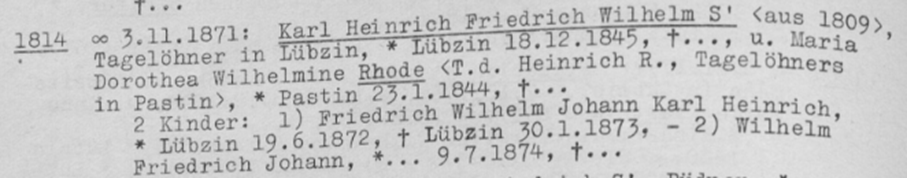
Quelle: DSB, S. 258
In Lübzin 1845 geboren, verheirate sich der Tagelöhner am 3. November 1871 in Boitin mit Marie Dorothea Wilhelmine Rhode (1844-1902). Später führten ihn seine Wege über Groß Raden und Langensee bei Bützow auf das Gut Subzin, in der Nähe von Laage, auf dessen Friedhof er 1901 beigesetzt wurde. Aus der Ehe entstammen neun Kinder:
- Carl Wilhelm Christian Schwießelmann (1866)
- Friedrich Wilhelm Johann Schwießelmann (1872-1873)
- Wilhelm Friedrich Johann Schwießelmann (1874)
- Marie Sophie Caroline Schwießelmann (1875)
- Ernst Joachim Christian Schwießelmann (1877)
- Johann Heinrich Christian Schwießelmann (1878)
- Sophie Wilhelmine Berta Schwießelmann (1880-1933)
- Heinrich Johann Wilhelm Schwießelmann (1884-1936)
- Sophie Friederike Anna Schwießelmann (1886)
Das Lager um Laage
Die Kinder von Carl Heinrich Friedrich Wilhelm Schwießelmann (1845-1901) - ein einfacher Knecht und Tagelöhner - waren ebenfalls sehr fruchtbar. Sie trieben die Schwießelmänner auf die Güter von Kronskamp, Striesdorf, Dolgen und bis in die Stadtmauern der einzigen Metropole Mecklenburgs, Rostock. Der erste Sohn Carl Wilhelm Christian (1866) wurde in Pastin bei Sternberg geboren und heiratete in Laage Rudolphine Catharine Auguste Bohnhoff (1864). Für ihn lassen sich vier Kinder nachweisen:
- Erna Schwießelmann (1892)
- Otto Carl Wilhelm August Schwießelmann (1895-1904)
- Martha Karoline Marie Schwießelmann (1898)
- Wilhelm Martin Albert Schwießelmann (1899-1918?)
Seine Frau brachte bereits Rudolf Bohnhoff (1886) mit in die Ehe ein. Die berühmte Laager Henningsmühle (https://de.wikipedia.org/wiki/Henningsm%C3%BChle spielt als Wohnort der Familie Bohnhoff hierbei eine Rolle.
Kronskamper Kinderreichtum
Noch kinderreicher war die Familie von Wilhelm Friedrich Johann Schwießelmann (1874), dessen Frau Veronika Najkowska (1873) ihm neun Kinder schenkte. Schon von der Hochzeit am 3.6.1897 gewissermaßen außerehelich „im nachträglichen Geständnis“ - wie der Laager Pastor Carl Beyer, zugleich Romancier von regionaler Bedeutung, schrieb - kam
- Otto Friedrich Wilhelm Schwießelmann (1895) zur Welt. Ihm folgten:
- Wilhelm Conrad Hermann Schwießelmann (1898-1972)
- Ernst Johann Carl Schwießelmann (1899-1963)
- Anna Emma Bertha Schwießelmann (1901)
- Paul Heinrich Christian Schwießelmann (1904-1905)
- Richard Emil Rudolf Schwießelmann (1905)
- Hermann Helmut Otto Schwießelmann (1908-1908)
- Herta Olga Anna Schwießelmann (1911)
- Paula Emma Martha Schwießelmann (1915)
Das letzte Kind ist „unehelich“ entstanden, wie das Kirchenbuch vermerkt. Als Gevatterin ist neben den Eltern auch „Frida Jochens, geborene Dunsky, Tagelöhnerfrau in Kronskamp“ eingetragen. Dies deckt sich mit der Familienchronik, die über Umwege in die Hände des Verfassers gekommen ist. Sie schweigt diplomatisch über das außereheliche Kind.
Die Familienchronik der Kronskamper Schwießelmänner aus einem Glaubensbuch des 19. Jahrhunderts weist auch auf zwei Verluste von Familienmitgliedern im 2. Weltkrieg (1939-1945) hin. Es handelt sich dabei um Willi (1921-1943) und Bruno Schwießelmann (1926-1944), die bereits einer späteren Generation angehörten. Willi fiel in Woroschilowsk an der Ostfront; Bruno im Dezember 1944 an der Westfront in Luxemburg. Das einzige sichtbare Zeichen der Kronskamper Schwießelmänner wurde nach 2000 auf dem Laager Friedhof getilgt. Der Grabstein dokumentierte den Tod von
Ernst Schwießelmann (6.12.1899-25.8.1963)
Emma Schwießelmann (23.7.1900-28.3.1971)
Walter Schwießelmann (17.2.1922-16.9.1963)
Wilhelmine Alm (20.10.1877-4.9.1965)
Walter könnte der Sohn von Ernst und Emma gewesen sein, Wilhelmine Alm die Mutter von Emma. Aber dies bleibt eine Mutmaßung.
Bülower Zweig
Carl Heinrich Friedrich Wilhelms dritter Sohn Ernst Joachim Christian Schwießelmann (1877- wurde am 1. Februar 1877 und – wie damals üblich – zehn Tage später in Parum getauft. Seine Konfirmation fand dann schon in Laage statt, als Vater Carl auf das Gut Subzin gewechselt war. Am 7.11.1902 heiratete er in Hohen Luckow Lisette Caroline Wilhelmine Schuhmacher (1877). Im Ehestandsverzeichnis wird der pragmatische Hochzeitsgrund lakonisch angedeutet: „Durch diese Ehe ist das am 26. Juni 1900 geborene Mädchen legitimiert.“ Bei der Volkszählung in Mecklenburg-Schwerin 1919 sind in dem Bülower Haushalt, wo sich Ernst als Landwirt verdingt, drei Kinder vermerkt:
- Herta Johanna Marie Schwießelmann (1903)
- Getrud Schwießelmann (1917)
- Otto Schwießelmann (1919)
Dolgener Tagelöhnerei
Bei dem vierten Sohn von Carl Heinrich Friedrich Wilhelm Schwießelmann (1845-1901) - Johann Heinrich Christian Joseph Schwießelmann (1878) - handelt es sich um den Ururgroßvater des Verfassers. Er wurde am 15.5.1878 in Bützow geboren und in der Laager Stadtkirche vermutlich zu Pfingsten 1892 konfirmiert. Wie seine Vorfahren verdingte er sich als Tagelöhner auf dem Gut derer von Plessen in Dolgen, wo er vermutlich auch seine spätere Frau Wilhelmine Caroline Dorothea Sophia Friederiz kennenlernte, die ebenfalls am 15.5.1875 in Dolgen geboren wurde. Sie schenkte ihm vier Kinder:
- Richard Heinrich Wilhelm Carl Schwießelmann (1902-1989)
- Emma Wilhelmine Johanna Schwießelmann (1904-1987)
- Erna Hertha Martha Schwießelmann (1913)
- Johann Schwießelmann (1919-2011)
Richard Schwießelmann ist der Urgroßvater des Verfassers und wurde noch in Kavelstorf vor den Toren Rostocks geboren, bevor sich der Vater in Dolgen niederließ. Richard wurde in Hohen Sprenz 1917 konfirmiert und heiratete in den 1920er Jahren Ella Möller (1906-1984).
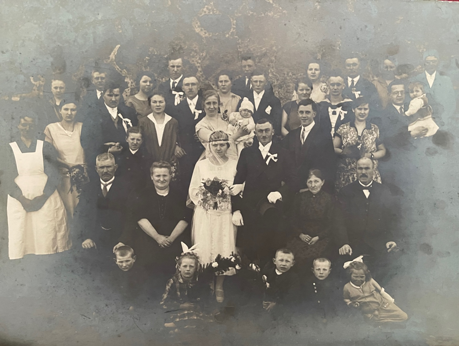
Quelle: Foto im Familienbesitz
Der gemeinsame Sohn Heinz Horst Ernst Schwießelmann (1929-2010 blieb ein Einzelkind, der Großvater des Verfassers. Richard war als freie Landarbeiter nach der Novemberrevolution 1918 tätig, arbeitete auf Gütern und ließ sich in den 1930er Jahren in Laage nieder, wo er bescheiden in der Hinterstraße (heute Straße der Einheit lebte). Sein jüngster Bruder Johann - ein Nachzügler - hat in seinen Lebenserinnerungen die Dolgener Tagelöhnerei (siehe die Rubrik: Lebenserinnerungen) eindrucksvoll geschildert. Sein Grabstein findet sich noch auf dem Laager Friedhof:
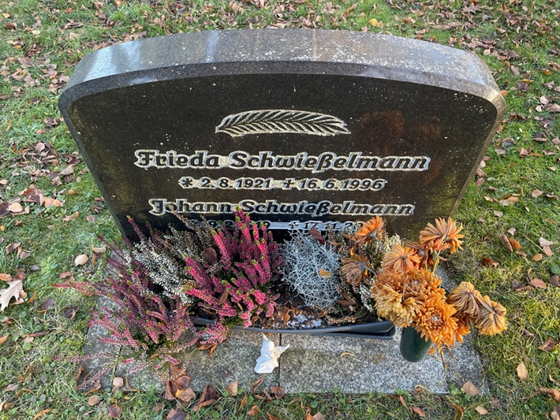
Quelle: Eigene Aufnahme.
Die Rostocker Schwießelmännerei
Der 5. Sohn Carl Heinrich Friedrich Wilhelm Schwießelmanns (1845-1901) war Heinrich Johann Wilhelm Schwießelmann (1884-1936). Mit sechs Kindern hinterließ er Spuren in der Hansestadt. Selbst in Bützow geboren, als sein Vater sich in Langensee verdingte, heiratete er die in Laage geborene Clara Wilhelmine Caroline Brey (1888), Tochter eines Tagelöhners aus Alt Kätwin. Aus der am 15. November in Cammin geschlossenen Ehe gingen sechs Kinder hervor:
- Wilhelm Hermann Otto Schwießelmann (1907-1945)
- Gretrud Wilhelmine Sophie Klara Schwießelmann (1910-1981)
- Hans Friedrich August (1912)
- Fritz Ernst Karl Schwießelmann (1915-1964)
- Herta Minna Magdalene Martha Schwießelmann (1921)
- Grete Liselotte Erna Berta Schwießelmann (1924)
Aus dem Rostocker Adressbuch von 1935 ist sein Beruf und sein Wohnsitz zu entnehmen: „Arbeitsmann, Grubenstraße 15“. Sein Sohn Wilhelm wohnte in der Diebstraße 2 und war „Kraftwagenführer“. Zudem wird noch „Erna Schwießelmann, geb. Laß, Wwe [Witwe], Margaretenstr. 28“ in dem Adressbuch geführt.
Wilhelm Hermann Otto starb am 19. März 1945 zum Ende des Krieges beim Rückzug der Wehrmacht aus Oberschlesien in Kerpen, Kreis Neustadt, wie der Suchdienst für vermisste Deutsche im September 1955 übermittelte. Er hinterließ seiner Frau Henni, geborene Meier selbst wiederum vier Kinder:
- Joachim Erich Ludwig Schwießelmann (1929)
- Peter Günter Horst Schwießelmann (1932)
- Georg Willi Heinrich Schwießelmann (1935)
- Hanelora Christa Herta Schwießelmann (1937)
Neustrelitzer Schuster
Für das 19. Jahrhundert sind Schwießelmänner sowohl in Neustrelitz als auch im Berliner Raum nachweisbar, was eine gewisse Ausbreitungsrichtung in die seit 1871 zur Reichshauptstadt avancierten Preußenmetropole nahelegt. Leider ist es dem Verfasser noch nicht gelungen, den Neustrelitzer bzw. Berliner Zweig mit dem Stammbaum zu verbinden, weil bislang die Verbindungsglieder unbekannt sind. Am 27.2.1800 wurde in dem Dorf Zierke, das heute ein Stadtteil von Neustrelitz ist, der Schuster Caspar Christian Schwießelmann im Alter von 71 Jahren beigesetzt.
Spätestens seit dem 18. Jahrhundert sind in dem Dorf, das 1871 nur 217 Einwohner zählte, Schwießelmänner verzeichnet. Ebendort schenkt Anna Louisa Schwießelmann ihrem Mann, dem Schuster Heinrich Ernst Schwießelmann, mit Adolph Ludwig Gottlieb Schwießelmann (1790) einen Sohn. Dieser wiederum verheiratet sich 1818 in Zierke mit Maria Sophia Gerchow (1801) und zwei Kinder erblicken das Licht der Welt:
- Adophine Caroline Wilhelmine Schwießelmann (1826)
- Friedrich Julius Gottlieb Schwießelmann (1830).
Berliner Musiker und Dozenten
Friedrich Julius Gottlieb Schwießelmann ging als Schuhmachermeister von Neustrelitz nach Berlin und heiratete dort Charlotta Dorothea Maria Bethke (1827) am 22. Juni 1862 in der Schöneberger Kirche. Der erste Sohn
- Carl Julius Robert Alexander (1860-1942) war da schon auf der Welt. Es folgte das Zwillingspärchen:
- Anna Schwießelmann (1864)
- Maria Schwießelmann (1864)
- Anna Maria Henriette (1866-1867).
Entsprechende Markierungen in den n Taufregistern deuten darauf hin, dass die Zwillingsmädchen eventuell tot zur Welt gekommen sind. Sicher ist, dass sich Carl Julius Robert Alexander Schwießelmann aus dem Schusterstand emanzipieren konnte und vor dem Standesamt in Berlin-Schönberg als Musiklehrer apostrophiert wurde. Der Standesbeamte korrigierte im Vermerk auch die Schreibweise von „Schwißelmann“ auf „Schwießelmann“. Der in der Hauptstraße 142 wohnende Musikus ehelichte am 28.3.1895 die in der Lützowstr. 52 wohnende Tochter des Bäckermeisters Ferdinand Christoph Siebert Anna Pauline Helene (1865).
Aus der Ehe gingen drei Kinder hervor:
- Charlotte Marie Pauline Schwießelmann (1895)
- Johanna Martha Luise Schwießelmann (1900)
- Martin Robert Julius Schwießelmann (1906-1979).
Letzterer hinterließ 1979 bei seinem Tode im Sankt-Joseph-Krankenhaus in Tempelhof nicht nur seine Frau Margarete Else, die er 1945 heiratete, sondern auch einen Nachruf zum Tode des französischen Philosophen Henri Bergson, der 1949 in der Neuphilologischen Zeitschrift (Bd. 1., S. 1-8) erschienen ist und Martin Schwießelmann als philosophisch und humanistisch gebildeten Gelehrten ausweist. Dies deckt sich mit der Bezeichnung als „Dozent“ im Berliner Sterberegister.
Stadtflucht
Das 19. Jahrhundert markiert den Aufbruch in die Moderne. Transportkosten sinken, neue Beförderungsmittel wie die Eisenbahn und Kommunikationsmittel wie Telegraphen machen die Welt zum Dorf. Die Industrialisierung lässt die Großstädte wachsen und zieht die Bevölkerungsüberschüsse der Dörfer magnetisch in die Mauern der Stadt, wo sich die Bauernkinder höhere Einkommen und Bildungsaufstieg versprechen. Die Rolle der Kinder von zahlreichen, billigen Arbeitskräften in der Landwirtschaft zu wenigen teuren Spezialisten in Industrie und Verwaltung ändert sich vollständig. In der Stadt wird ihre Zahl geringer, während der Bildungs- und Erziehungsaufwand des Einzelnen steigt.
Dieser gesellschaftliche Wandel mit der Entwurzelung der Mecklenburger aus Mecklenburg verstärkte sich nochmals durch die Bevölkerungsumschichten am Ende des Zweiten Weltkriegs. Das bäurische Milieu ist marginalisiert, kaum ein Schwießelmann ist heute noch in der Landwirtschaft tätig, wo Generationen ihrer Vorfahren als Hofgänger und Tagelöhner den Acker furchten. Stattdessen verlieren sich die Spuren von Laage, Tarnow, Bützow, Güstrow und Parchim weit über Mecklenburg hinaus bis nach Bayern, Sachsen und Thüringen.
Die Welt als Dorf
Dabei finden sich manche Kuriositäten, wie den Landarzt Albert Schwießelmann aus Vorpommern, der von 1964 bis 2002 in Franzburg als Landarzt praktizierte und den DDR-Bürgern „Badewanne und Raduga-Farbfernseher per Rezept“ verordnete: „Die einen hatte starke Hautekzeme, die anderen mussten ihren ideologischen Horizont erweitern, um besser am gesellschaftlich-politischen Leben teilnehmen zu können“, feixte der Arzt in der Ostsee-Zeitung vom 1. Oktober 2002 (Quelle: OZ am 1.10.2002: „Bei der Fahne gehasst, auf dem Dorfe geliebt. Landarzt Albert Schwießelmann verabschiedet sich von Patienten“).
Durch Auswanderung und Verheiratung verließen Schwießelmänner und -frauen ihr natürliches Habitat sogar bis nach Amerika. So lässt sich der Name „Schwießelmann“ in den Vereinigten Staaten nachweisen, in die die Tagelöhner des 19. Jahrhunderts auswanderten, um der Armut und Enge der Tagelöhnerkaten Mecklenburgs zu entkommen und sich dort als Landeigentümer ein besseres Leben aufzubauen. Wer sich davon einen Eindruck verschaffen möchte, der lese Johannes Gillhoffs Briefroman über „Jürnjakob Swen, der Amerikafahrer”. In diesem Briefroman findet er die harten Lebensumstände mecklenburgischer Auswanderung haargenau nachgezeichnet. Er bekommt auch einen Eindruck, warum der mecklenburgische Bauer als „swinplietsch” gilt. Auf unsere Herkunft aus mecklenburgischen Ackerfurche können wir Schwießelmänner stolz sein.